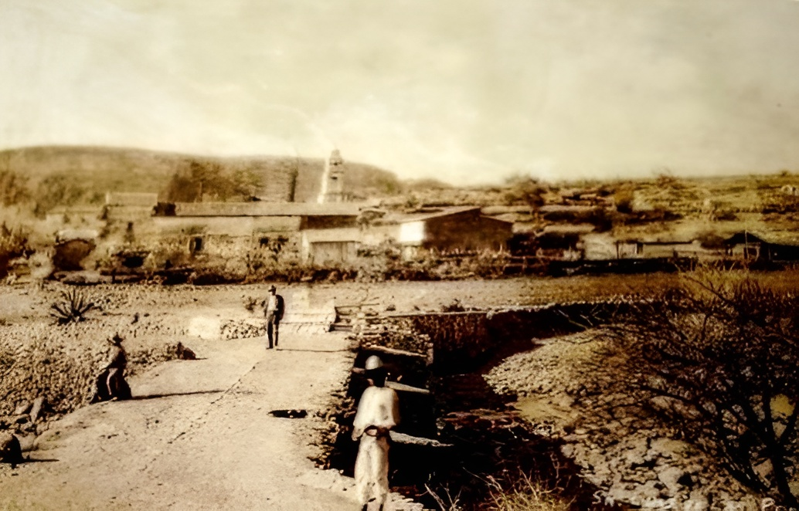

El Pueblo Bajo el Agua
San Luis de las Peras
Bajo las tranquilas aguas de la presa Taxhimay descansan los recuerdos del antiguo poblado de San Luis de las Peras. En 1934, sus habitantes tuvieron que abandonar sus hogares, sus huertas y su parroquia para dar paso a la construcción de la presa, una obra destinada a llevar agua hacia el Valle del Mezquital.
Hoy en día, la cúpula de la parroquia de San Luis Rey de Francia y la torre de la iglesia del Cristo del Quejido emergen de las profundidades como testigos silenciosos del pasado. Cuando el nivel del agua baja, es posible caminar entre las ruinas de piedra de lo que alguna vez fue un pueblo lleno de vida.
